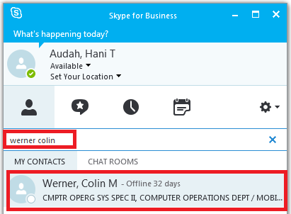
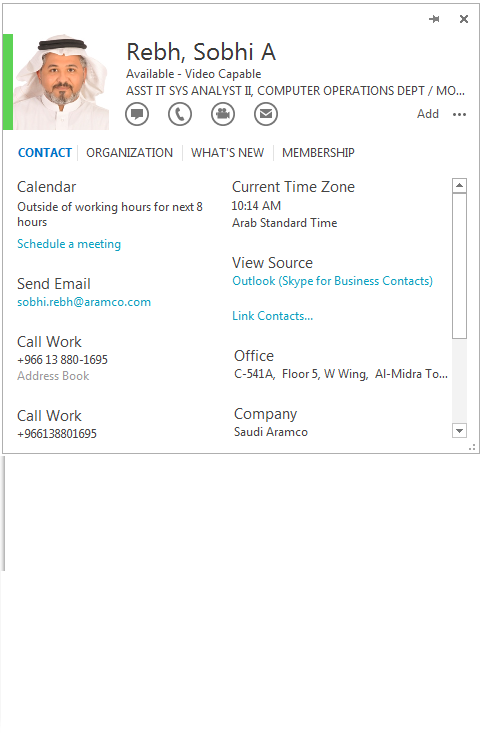

Managing Contacts
Contacts
Find a Contact
Connect with people in your organization, or with friends who have a Skype account.
Type a name in the Search box and wait for the corresponding entry to appear below it.
Add a Contact
Once you find a person, add them to your Contacts list for quick access.
- Right-click the name in the search results.
- Click Add to Contact List.
- Pick a group to add your new contact to, or Other Contacts if you wish to leave the group unspecified).
View a Contact Card
Your status and availability can be linked to your Outlook calendar. You can see when your work colleagues are available, this is particularly helpful for colleagues working in different locations.
- Tap a contact picture.
- Tap the Contact Card button to open Contact Card.
Create a Group
Set up a group for each team you work with so you quickly see who’s available, or communicate with the entire team at once.
- Click the Add a Contact button.
- Select Create a New Group.

Begin typing your new group name and hit Enter; the empty group will appear at the bottom of the contacts list. You may now add users to this group using the method specified above.
Presence
Presence is automatically set based on your Outlook calendar but you can change it temporarily if you want to. Presence status is a quick way for other people to see whether or not you are free to chat. Here are the presence settings you can change:

* Set automatically for you based on your keyboard activity or Outlook calendar.
** You can set your presence to this anytime you want.